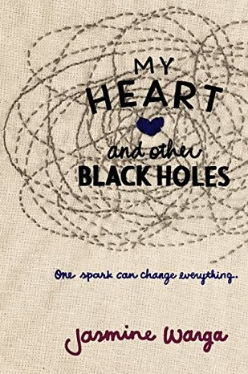

My favorite book is "My Heart and Other Black Holes" by Jasmine Warga.

This book is about a 15 year old girl named Aysel. Aysel believes that her life is horrible and falling into a black hole. Aysel finds this boy Roman, on a suicide website, where she becomes friends with him. They both have the same intentions, but they need eachother to make sure they don't decide otherwise. Aysel and Roman develop a strange friendship which helps navigate the book. You will have to read "My Heart and Other Black Holes" to find out how it ends!